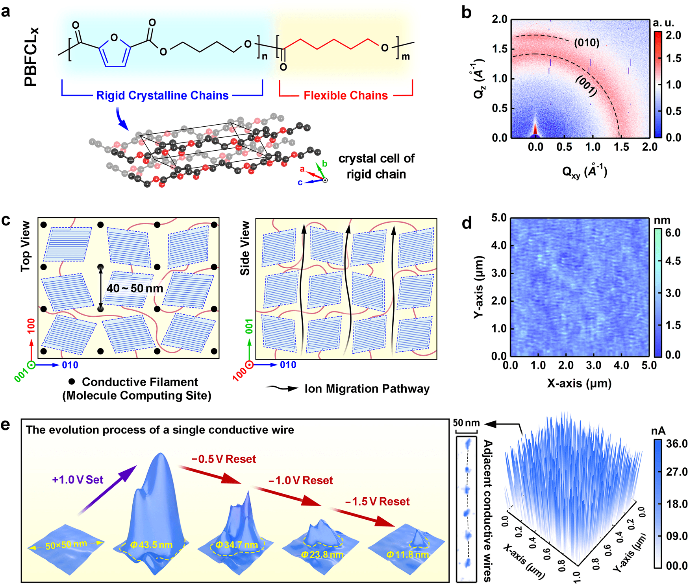
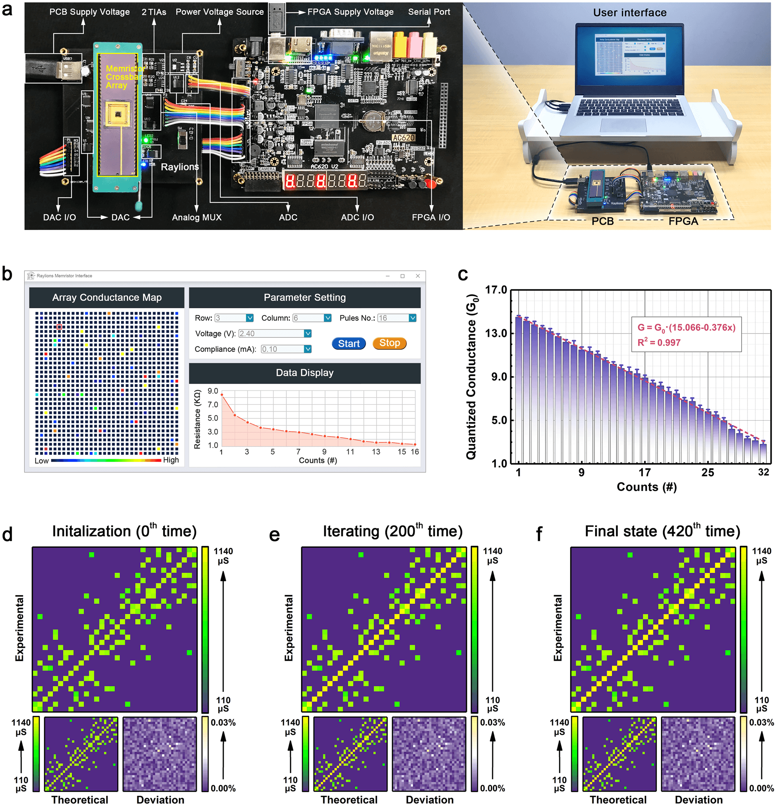
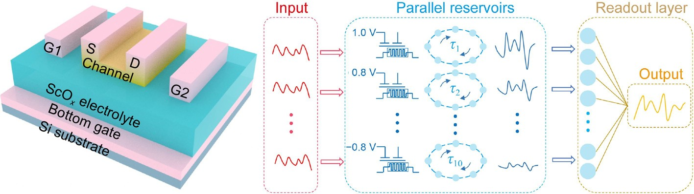
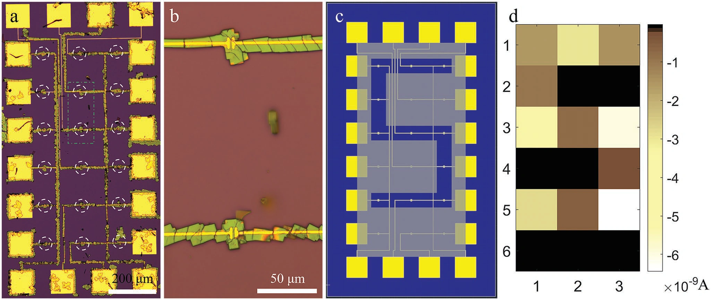
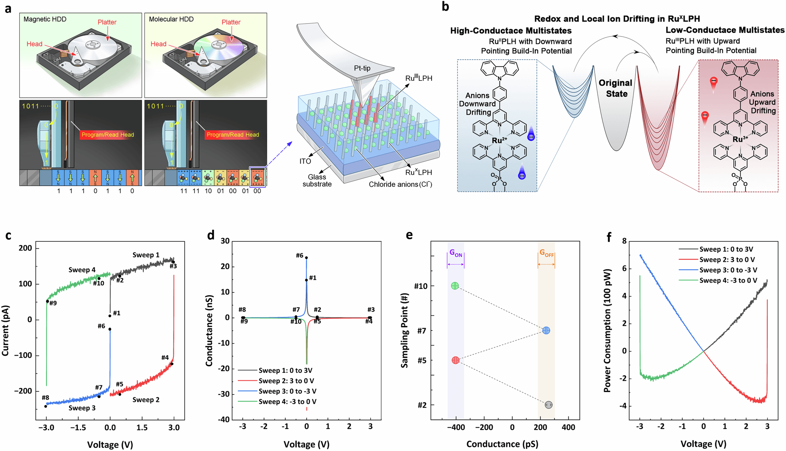

有机突触材料与类脑计算芯片
半结晶聚合物的有序结构约束离子迁移，形成致密、均匀的导电纳米细丝。

50 nm 突触器件集成为 32 × 32 阵列，与 FPGA 协同构建类脑计算硬件。

离子调控突触与物理储备池计算
多端电解质栅晶体管结合静电与电化学掺杂，在同类器件中实现短时动态与长期记忆。
利用可调时间尺度构建并行储备层，以非易失电导构建读出层，实现图像识别与时间序列预测。

有机单晶光电探测与阵列
在预制电极上自组装有机单微晶，构建可寻址光电探测阵列，将空间光信号转化为电学读出。

1.7 K PPI3 × 6 可寻址阵列光信号读出
分子信息存储
耦合氧化还原反应与局域离子迁移，调控自组装分子单层的多级电导，实现存储与原位加密。

多级存储单单元 XOR